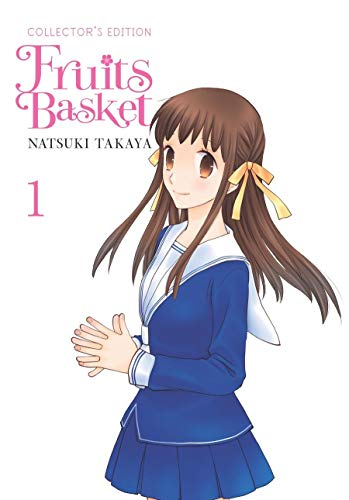
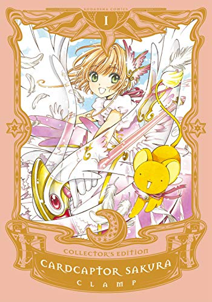
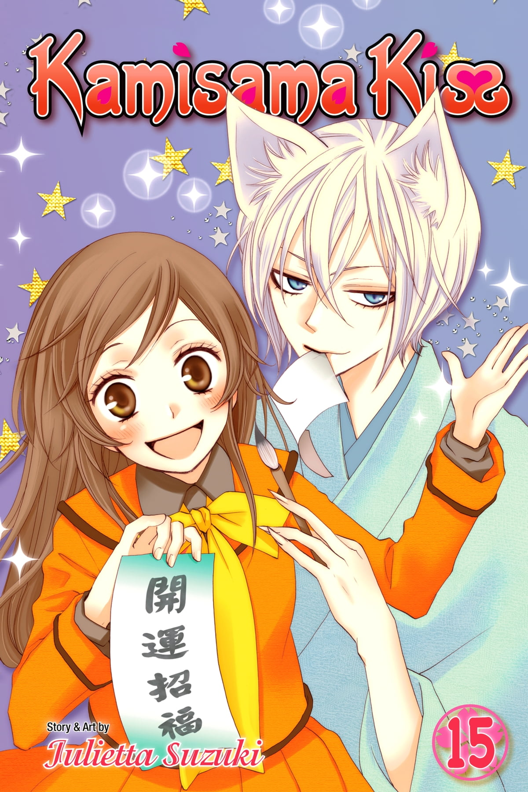

My Manga Collection
Welcome! Here you can find all the manga volumes i own.

Ao haru ride
In high school, Futaba gets a second chance with her first love, Kou.
Futaba Yoshioka thought all boys were loud and obnoxious until she met Kou Tanaka in junior high. But as soon as she realized she really liked him, he had already moved away because of family issues. Now in high school, she meets Kou again, but is he still the same boy she fell in love with?
Volumes: 13
Status:Finish
Puntation:7
Collection status:13/13

Fruits basket
After a family tragedy turns her life upside down, plucky high schooler Tohru Honda takes matters into her own hands and moves out...into a tent! Unfortunately for her, she pitches her new home on private land belonging to the mysterious Sohma clan, and it isn't long before the owners discover her secret. But, as Tohru quickly finds out when the family offers to take her in, the Sohmas have a secret of their own--when touched by the opposite sex, they turn into the animals of the Chinese Zodiac!
Volumes: 12
Status:Finish
Puntation:9
Collection status:12/12

Sasaki and Miyano
Miyano spends his days peacefully reading Boys' Love comics and worrying
about how girly his face is-until a chance encounter leads to a scuffle with his
senior Sasaki. Intrigued by his feisty junior Miyano, delinquent Sasaki uses
every opportunity he can to get closer...
Volumes: 5
Status: On going
Puntation: 9
Collection status: 5/5

Sakura Cardcaptor
The adventures of the plucky Sakura Kinomoto are as adorably thrilling as ever, as she tracks down the magical Clow Cards and plunges headlong into a world of sorcery beyond anything she could've imagined.
Volumes: 9
Status: Finish
Puntation: ?
Collection status: 9/9

Kamisama Kiss
Nanami has all kinds of new responsibilities she doesn't understand, dangers she's unaware of, and a cranky ex-familiar who's...actually pretty hot. What's a new-fledged godling to do?
Volumes: 25
Status: Finish
Puntation: 10
Collection status: 25/25